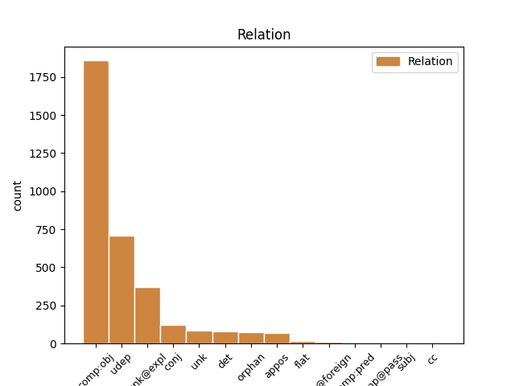
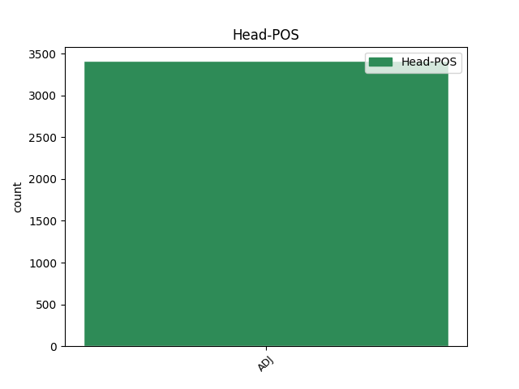
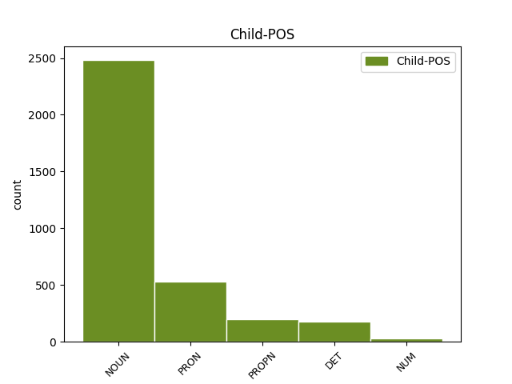

Distribution of features within this leaf



Agreement Rules sorted by frequency.
- When the dependent token is the direct object complements(comp:obj) of the head token, and the head token is ADJ and the dependent token is NOUN.
1 Jako _ _ _ _ 0 _ _ _
2 tradičně _ _ _ _ 0 _ _ _
3 typicky _ _ _ _ 0 _ _ _
4 mužské _ _ _ _ 0 _ _ _
5 society _ _ _ _ 0 _ _ _
6 lze _ _ _ _ 0 _ _ _
7 jmenovat _ _ _ _ 0 _ _ _
8 jednak _ _ _ _ 0 _ _ _
9 armádu _ _ _ _ 0 _ _ _
10 , _ _ _ _ 0 _ _ _
11 jednak _ _ _ _ 0 _ _ _
12 tzv _ _ _ _ 0 _ _ _
13 . _ _ _ _ 0 _ _ _
14 " _ _ _ _ 0 _ _ _
15 ekleziomorfní _ _ _ _ 0 _ _ _
16 struktury _ _ _ _ 0 _ _ _
17 " _ _ _ _ 0 _ _ _
18 ( _ _ _ _ 0 _ _ _
19 tj _ _ _ _ 0 _ _ _
20 . _ _ _ _ 0 _ _ _
21 mající _ _ _ _ 0 _ _ _
22 charakter _ _ _ _ 0 _ _ _
23 církví _ _ _ _ 0 _ _ _
24 ) _ _ _ _ 0 _ _ _
25 spravující spravující ADJ AGFP4-----A---- Aspect=Imp|Case=Acc|Gender=Fem|Number=Plur|Polarity=Pos|Tense=Pres|VerbForm=Part|Voice=Act 0 _ _ _
26 nějakou _ _ _ _ 0 _ _ _
27 myšlenku myšlenka NOUN NNFS4-----A---- Case=Acc|Gender=Fem|Number=Sing|Polarity=Pos 25 comp:obj _ SpaceAfter=No
28 , _ _ _ _ 0 _ _ _
29 nějaké _ _ _ _ 0 _ _ _
30 paradigma _ _ _ _ 0 _ _ _
31 ( _ _ _ _ 0 _ _ _
32 blíže _ _ _ _ 0 _ _ _
33 viz _ _ _ _ 0 _ _ _
34 autorův _ _ _ _ 0 _ _ _
35 článek _ _ _ _ 0 _ _ _
36 " _ _ _ _ 0 _ _ _
37 Ekleziomorfní _ _ _ _ 0 _ _ _
38 struktury _ _ _ _ 0 _ _ _
39 v _ _ _ _ 0 _ _ _
40 přírodních _ _ _ _ 0 _ _ _
41 vědách _ _ _ _ 0 _ _ _
42 v _ _ _ _ 0 _ _ _
43 Scientia _ _ _ _ 0 _ _ _
44 & _ _ _ _ 0 _ _ _
45 Philosophia _ _ _ _ 0 _ _ _
46 2 _ _ _ _ 0 _ _ _
47 : _ _ _ _ 0 _ _ _
48 78 _ _ _ _ 0 _ _ _
49 - _ _ _ _ 0 _ _ _
50 79 _ _ _ _ 0 _ _ _
51 ) _ _ _ _ 0 _ _ _
52 . _ _ _ _ 0 _ _ _
1 Zejména _ _ _ _ 0 _ _ _
2 v _ _ _ _ 0 _ _ _
3 oblastech _ _ _ _ 0 _ _ _
4 přímo _ _ _ _ 0 _ _ _
5 sousedících _ _ _ _ 0 _ _ _
6 s _ _ _ _ 0 _ _ _
7 prvotním _ _ _ _ 0 _ _ _
8 poškozením _ _ _ _ 0 _ _ _
9 ( _ _ _ _ 0 _ _ _
10 trombózou trombóza NOUN NNFS7-----A---- Case=Ins|Gender=Fem|Number=Sing|Polarity=Pos 13 udep _ _
11 nebo _ _ _ _ 0 _ _ _
12 krvácením _ _ _ _ 0 _ _ _
13 poškozenou poškozený ADJ AAFS7----1A---- Case=Ins|Degree=Pos|Gender=Fem|Number=Sing|Polarity=Pos 0 _ _ _
14 částí _ _ _ _ 0 _ _ _
15 tkáně _ _ _ _ 0 _ _ _
16 ) _ _ _ _ 0 _ _ _
17 , _ _ _ _ 0 _ _ _
18 v _ _ _ _ 0 _ _ _
19 tak _ _ _ _ 0 _ _ _
20 zvaném _ _ _ _ 0 _ _ _
21 ischemickém _ _ _ _ 0 _ _ _
22 polostínu _ _ _ _ 0 _ _ _
23 , _ _ _ _ 0 _ _ _
24 se _ _ _ _ 0 _ _ _
25 při _ _ _ _ 0 _ _ _
26 obnovení _ _ _ _ 0 _ _ _
27 přívodu _ _ _ _ 0 _ _ _
28 kyslíku _ _ _ _ 0 _ _ _
29 může _ _ _ _ 0 _ _ _
30 vyvolat _ _ _ _ 0 _ _ _
31 poškození _ _ _ _ 0 _ _ _
32 , _ _ _ _ 0 _ _ _
33 které _ _ _ _ 0 _ _ _
34 situaci _ _ _ _ 0 _ _ _
35 ještě _ _ _ _ 0 _ _ _
36 zhoršuje _ _ _ _ 0 _ _ _
37 . _ _ _ _ 0 _ _ _
1 Z _ _ _ _ 0 _ _ _
2 kritiky _ _ _ _ 0 _ _ _
3 teorií _ _ _ _ 0 _ _ _
4 , _ _ _ _ 0 _ _ _
5 které _ _ _ _ 0 _ _ _
6 postrádají _ _ _ _ 0 _ _ _
7 vyvratitelnost _ _ _ _ 0 _ _ _
8 , _ _ _ _ 0 _ _ _
9 a _ _ _ _ 0 _ _ _
10 jsou _ _ _ _ 0 _ _ _
11 tedy _ _ _ _ 0 _ _ _
12 nevědecké _ _ _ _ 0 _ _ _
13 , _ _ _ _ 0 _ _ _
14 dospívá _ _ _ _ 0 _ _ _
15 ke _ _ _ _ 0 _ _ _
16 kritice _ _ _ _ 0 _ _ _
17 ideologií _ _ _ _ 0 _ _ _
18 ( _ _ _ _ 0 _ _ _
19 nelze _ _ _ _ 0 _ _ _
20 je _ _ _ _ 0 _ _ _
21 potvrdit _ _ _ _ 0 _ _ _
22 ani _ _ _ _ 0 _ _ _
23 vyvrátit _ _ _ _ 0 _ _ _
24 , _ _ _ _ 0 _ _ _
25 nejsou _ _ _ _ 0 _ _ _
26 tedy _ _ _ _ 0 _ _ _
27 vědecké _ _ _ _ 0 _ _ _
28 ) _ _ _ _ 0 _ _ _
29 a _ _ _ _ 0 _ _ _
30 k _ _ _ _ 0 _ _ _
31 požadavku _ _ _ _ 0 _ _ _
32 na _ _ _ _ 0 _ _ _
33 otevřenost _ _ _ _ 0 _ _ _
34 společnosti _ _ _ _ 0 _ _ _
35 , _ _ _ _ 0 _ _ _
36 vyznačující vyznačující ADJ AGFS4-----A---- Aspect=Imp|Case=Acc|Gender=Fem|Number=Sing|Polarity=Pos|Tense=Pres|VerbForm=Part|Voice=Act 0 _ _ _
37 se se PRON P7-X4---------- Case=Acc|PronType=Prs|Reflex=Yes|Variant=Short 36 unk@expl _ LGloss=(zvr._zájmeno/částice)
38 racionálními _ _ _ _ 0 _ _ _
39 postupy _ _ _ _ 0 _ _ _
40 a _ _ _ _ 0 _ _ _
41 schopností _ _ _ _ 0 _ _ _
42 učit _ _ _ _ 0 _ _ _
43 se _ _ _ _ 0 _ _ _
44 z _ _ _ _ 0 _ _ _
45 chyb _ _ _ _ 0 _ _ _
46 . _ _ _ _ 0 _ _ _
1 Pátý _ _ _ _ 0 _ _ _
2 markýz _ _ _ _ 0 _ _ _
3 ze _ _ _ _ 0 _ _ _
4 Salisbury _ _ _ _ 0 _ _ _
5 ( _ _ _ _ 0 _ _ _
6 několikrát _ _ _ _ 0 _ _ _
7 střídal _ _ _ _ 0 _ _ _
8 různé _ _ _ _ 0 _ _ _
9 britské _ _ _ _ 0 _ _ _
10 ministerské _ _ _ _ 0 _ _ _
11 předsedy _ _ _ _ 0 _ _ _
12 ) _ _ _ _ 0 _ _ _
13 zjistil _ _ _ _ 0 _ _ _
14 , _ _ _ _ 0 _ _ _
15 že _ _ _ _ 0 _ _ _
16 špatně _ _ _ _ 0 _ _ _
17 rozlišuje _ _ _ _ 0 _ _ _
18 tváře _ _ _ _ 0 _ _ _
19 svých svůj DET P8XP2---------- Case=Gen|Number=Plur|Poss=Yes|PronType=Prs|Reflex=Yes 20 det _ LGloss=(přivlast.)|LId=svůj-1
20 bližních bližní ADJ AAMP2----1A---- Animacy=Anim|Case=Gen|Degree=Pos|Gender=Masc|Number=Plur|Polarity=Pos 0 _ _ _
21 , _ _ _ _ 0 _ _ _
22 dokonce _ _ _ _ 0 _ _ _
23 vlastních _ _ _ _ 0 _ _ _
24 příbuzných _ _ _ _ 0 _ _ _
25 , _ _ _ _ 0 _ _ _
26 setkává _ _ _ _ 0 _ _ _
27 - _ _ _ _ 0 _ _ _
28 li _ _ _ _ 0 _ _ _
29 se _ _ _ _ 0 _ _ _
30 s _ _ _ _ 0 _ _ _
31 nimi _ _ _ _ 0 _ _ _
32 za _ _ _ _ 0 _ _ _
33 nečekaných _ _ _ _ 0 _ _ _
34 okolností _ _ _ _ 0 _ _ _
35 . _ _ _ _ 0 _ _ _
1 * _ _ _ _ 0 _ _ _
2 ) _ _ _ _ 0 _ _ _
3 Každý _ _ _ _ 0 _ _ _
4 asi _ _ _ _ 0 _ _ _
5 ví _ _ _ _ 0 _ _ _
6 , _ _ _ _ 0 _ _ _
7 že _ _ _ _ 0 _ _ _
8 slova _ _ _ _ 0 _ _ _
9 toxický _ _ _ _ 0 _ _ _
10 , _ _ _ _ 0 _ _ _
11 toxicita _ _ _ _ 0 _ _ _
12 znamenají _ _ _ _ 0 _ _ _
13 " _ _ _ _ 0 _ _ _
14 jedovatý jedovatý ADJ AAIS1----1A---- Animacy=Inan|Case=Nom|Degree=Pos|Gender=Masc|Number=Sing|Polarity=Pos 0 _ _ _
15 , _ _ _ _ 0 _ _ _
16 jedovatost jedovatost NOUN NNFS1-----A---- Case=Nom|Gender=Fem|Number=Sing|Polarity=Pos 14 conj _ LDeriv=jedovatý|SpaceAfter=No
17 " _ _ _ _ 0 _ _ _
18 . _ _ _ _ 0 _ _ _
1 ( _ _ _ _ 0 _ _ _
2 Nedávno _ _ _ _ 0 _ _ _
3 vyšla _ _ _ _ 0 _ _ _
4 ve _ _ _ _ 0 _ _ _
5 slovenském _ _ _ _ 0 _ _ _
6 překladu _ _ _ _ 0 _ _ _
7 nejznámější známý ADJ AAFS1----3A---- Case=Nom|Degree=Sup|Gender=Fem|Number=Sing|Polarity=Pos 0 _ _ _
8 z _ _ _ _ 0 _ _ _
9 nich _ _ _ _ 0 _ _ _
10 , _ _ _ _ 0 _ _ _
11 Caprovo _ _ _ _ 0 _ _ _
12 " _ _ _ _ 0 _ _ _
13 Tao tao NOUN NNNS1-----A---- Case=Nom|Foreign=Yes|Gender=Neut|Number=Sing|Polarity=Pos 7 appos _ _
14 fyziky _ _ _ _ 0 _ _ _
15 " _ _ _ _ 0 _ _ _
16 ) _ _ _ _ 0 _ _ _
17 . _ _ _ _ 0 _ _ _
1 Informace _ _ _ _ 0 _ _ _
2 posílejte _ _ _ _ 0 _ _ _
3 na _ _ _ _ 0 _ _ _
4 adresu _ _ _ _ 0 _ _ _
5 : _ _ _ _ 0 _ _ _
6 MF _ _ _ _ 0 _ _ _
7 DNES _ _ _ _ 0 _ _ _
8 , _ _ _ _ 0 _ _ _
9 Česká český ADJ AAFS1----1A---- Case=Nom|Degree=Pos|Gender=Fem|Number=Sing|Polarity=Pos 0 _ _ _
10 19 _ _ _ _ 0 _ _ _
11 / _ _ _ _ 0 _ _ _
12 21 _ _ _ _ 0 _ _ _
13 , _ _ _ _ 0 _ _ _
14 602 _ _ _ _ 0 _ _ _
15 00 _ _ _ _ 0 _ _ _
16 Brno Brno PROPN NNNS1-----A---- Case=Nom|Gender=Neut|NameType=Geo|Number=Sing|Polarity=Pos 9 conj _ SpaceAfter=No
17 . _ _ _ _ 0 _ _ _
1 Nelze _ _ _ _ 0 _ _ _
2 vyloučit _ _ _ _ 0 _ _ _
3 , _ _ _ _ 0 _ _ _
4 že _ _ _ _ 0 _ _ _
5 v _ _ _ _ 0 _ _ _
6 zemích _ _ _ _ 0 _ _ _
7 , _ _ _ _ 0 _ _ _
8 které _ _ _ _ 0 _ _ _
9 v _ _ _ _ 0 _ _ _
10 posledních _ _ _ _ 0 _ _ _
11 desetiletích _ _ _ _ 0 _ _ _
12 dosáhly _ _ _ _ 0 _ _ _
13 výrazného _ _ _ _ 0 _ _ _
14 prodloužení _ _ _ _ 0 _ _ _
15 lidského _ _ _ _ 0 _ _ _
16 života _ _ _ _ 0 _ _ _
17 , _ _ _ _ 0 _ _ _
18 se _ _ _ _ 0 _ _ _
19 kromě _ _ _ _ 0 _ _ _
20 změn _ _ _ _ 0 _ _ _
21 v _ _ _ _ 0 _ _ _
22 životním _ _ _ _ 0 _ _ _
23 stylu _ _ _ _ 0 _ _ _
24 ( _ _ _ _ 0 _ _ _
25 nekouření _ _ _ _ 0 _ _ _
26 , _ _ _ _ 0 _ _ _
27 pohyb _ _ _ _ 0 _ _ _
28 , _ _ _ _ 0 _ _ _
29 hubenost _ _ _ _ 0 _ _ _
30 , _ _ _ _ 0 _ _ _
31 vlákniny _ _ _ _ 0 _ _ _
32 v _ _ _ _ 0 _ _ _
33 potravě _ _ _ _ 0 _ _ _
34 ) _ _ _ _ 0 _ _ _
35 uplatňují _ _ _ _ 0 _ _ _
36 i _ _ _ _ 0 _ _ _
37 přirozené přirozený ADJ AAIP1----1A---- Animacy=Inan|Case=Nom|Degree=Pos|Gender=Masc|Number=Plur|Polarity=Pos 0 _ _ _
38 ( _ _ _ _ 0 _ _ _
39 vitamíny vitamín NOUN NNIP1-----A---- Animacy=Inan|Case=Nom|Gender=Masc|Number=Plur|Polarity=Pos 37 unk _ _
40 ze _ _ _ _ 0 _ _ _
41 zeleniny _ _ _ _ 0 _ _ _
42 a _ _ _ _ 0 _ _ _
43 ovoce _ _ _ _ 0 _ _ _
44 ) _ _ _ _ 0 _ _ _
45 a _ _ _ _ 0 _ _ _
46 umělé _ _ _ _ 0 _ _ _
47 antioxidanty _ _ _ _ 0 _ _ _
48 , _ _ _ _ 0 _ _ _
49 přidávané _ _ _ _ 0 _ _ _
50 do _ _ _ _ 0 _ _ _
51 potravin _ _ _ _ 0 _ _ _
52 . _ _ _ _ 0 _ _ _
1 To _ _ _ _ 0 _ _ _
2 nám _ _ _ _ 0 _ _ _
3 nejlépe _ _ _ _ 0 _ _ _
4 ukazuje _ _ _ _ 0 _ _ _
5 třetí _ _ _ _ 0 _ _ _
6 a _ _ _ _ 0 _ _ _
7 nejkrásnější _ _ _ _ 0 _ _ _
8 mlhovina _ _ _ _ 0 _ _ _
9 zvaná zvaný ADJ AAFS1----1A---- Case=Nom|Degree=Pos|Gender=Fem|Number=Sing|Polarity=Pos 0 _ _ _
10 Růžice Růžice PROPN NNFS1-----A---- Case=Nom|Gender=Fem|NameType=Oth|Number=Sing|Polarity=Pos 9 comp:obj _ _
11 ( _ _ _ _ 0 _ _ _
12 Rosette _ _ _ _ 0 _ _ _
13 ) _ _ _ _ 0 _ _ _
14 v _ _ _ _ 0 _ _ _
15 souhvězdí _ _ _ _ 0 _ _ _
16 Jednorožce _ _ _ _ 0 _ _ _
17 ( _ _ _ _ 0 _ _ _
18 Monoceros _ _ _ _ 0 _ _ _
19 ) _ _ _ _ 0 _ _ _
20 . _ _ _ _ 0 _ _ _
1 Eva _ _ _ _ 0 _ _ _
2 Tálská _ _ _ _ 0 _ _ _
3 rozšíří _ _ _ _ 0 _ _ _
4 inscenace _ _ _ _ 0 _ _ _
5 dvojice _ _ _ _ 0 _ _ _
6 králů _ _ _ _ 0 _ _ _
7 nonsensu _ _ _ _ 0 _ _ _
8 ( _ _ _ _ 0 _ _ _
9 Learovy _ _ _ _ 0 _ _ _
10 Příběhy _ _ _ _ 0 _ _ _
11 dlouhého _ _ _ _ 0 _ _ _
12 nosu _ _ _ _ 0 _ _ _
13 a _ _ _ _ 0 _ _ _
14 Carollovu Carollův ADJ AUFS4M--------- Case=Acc|Gender=Fem|Gender[psor]=Masc|NameType=Sur|Number=Sing|Poss=Yes 0 _ _ _
15 Alenku Alenka PROPN NNFS4-----A---- Case=Acc|Gender=Fem|NameType=Giv|Number=Sing|Polarity=Pos 14 flat _ LGloss=(^DI*2)|SpaceAfter=No
16 ) _ _ _ _ 0 _ _ _
17 na _ _ _ _ 0 _ _ _
18 trojici _ _ _ _ 0 _ _ _
19 Morgensternovými _ _ _ _ 0 _ _ _
20 Šibeničními _ _ _ _ 0 _ _ _
21 písněmi _ _ _ _ 0 _ _ _
22 , _ _ _ _ 0 _ _ _
23 hezky _ _ _ _ 0 _ _ _
24 se _ _ _ _ 0 _ _ _
25 jí _ _ _ _ 0 _ _ _
26 Nešťastnými _ _ _ _ 0 _ _ _
27 svatbami _ _ _ _ 0 _ _ _
28 rozbíhá _ _ _ _ 0 _ _ _
29 i _ _ _ _ 0 _ _ _
30 projekt _ _ _ _ 0 _ _ _
31 studia _ _ _ _ 0 _ _ _
32 Dům _ _ _ _ 0 _ _ _
33 . _ _ _ _ 0 _ _ _
1 Tento _ _ _ _ 0 _ _ _
2 rys _ _ _ _ 0 _ _ _
3 procitá _ _ _ _ 0 _ _ _
4 vždy _ _ _ _ 0 _ _ _
5 , _ _ _ _ 0 _ _ _
6 když _ _ _ _ 0 _ _ _
7 se _ _ _ _ 0 _ _ _
8 církev _ _ _ _ 0 _ _ _
9 začíná _ _ _ _ 0 _ _ _
10 víc _ _ _ _ 0 _ _ _
11 starat _ _ _ _ 0 _ _ _
12 o _ _ _ _ 0 _ _ _
13 svůj _ _ _ _ 0 _ _ _
14 majetek _ _ _ _ 0 _ _ _
15 než _ _ _ _ 0 _ _ _
16 o _ _ _ _ 0 _ _ _
17 své svůj DET P8YP4---------1 Case=Acc|Gender=Masc|Number=Plur|Poss=Yes|PronType=Prs|Reflex=Yes 18 udep _ LGloss=(přivlast.)|LId=svůj-1
18 plačící plačící ADJ AAMP4----1A---- Animacy=Anim|Case=Acc|Degree=Pos|Gender=Masc|Number=Plur|Polarity=Pos 0 _ _ _
19 . _ _ _ _ 0 _ _ _
1 Nahoře _ _ _ _ 0 _ _ _
2 hřbetní hřbetní ADJ AAFS1----1A---- Case=Nom|Degree=Pos|Gender=Fem|Number=Sing|Polarity=Pos 0 _ _ _
3 , _ _ _ _ 0 _ _ _
4 dole _ _ _ _ 0 _ _ _
5 břišní _ _ _ _ 0 _ _ _
6 strana strana NOUN NNFS1-----A---- Case=Nom|Gender=Fem|Number=Sing|Polarity=Pos 2 orphan _ LGloss=(v_prostoru)|LId=strana-1
7 těla _ _ _ _ 0 _ _ _
8 . _ _ _ _ 0 _ _ _
1 Proto _ _ _ _ 0 _ _ _
2 je _ _ _ _ 0 _ _ _
3 možné _ _ _ _ 0 _ _ _
4 , _ _ _ _ 0 _ _ _
5 že _ _ _ _ 0 _ _ _
6 někteří _ _ _ _ 0 _ _ _
7 oponenti _ _ _ _ 0 _ _ _
8 našli _ _ _ _ 0 _ _ _
9 při _ _ _ _ 0 _ _ _
10 vlastním _ _ _ _ 0 _ _ _
11 zpracování _ _ _ _ 0 _ _ _
12 stejných _ _ _ _ 0 _ _ _
13 dat _ _ _ _ 0 _ _ _
14 stromy _ _ _ _ 0 _ _ _
15 úspornější úsporný ADJ AAIP4----2A---- Animacy=Inan|Case=Acc|Degree=Cmp|Gender=Masc|Number=Plur|Polarity=Pos 0 _ _ _
16 , _ _ _ _ 0 _ _ _
17 ba _ _ _ _ 0 _ _ _
18 dokonce _ _ _ _ 0 _ _ _
19 takové takový DET PDIP4---------- Animacy=Inan|Case=Acc|Gender=Masc|Number=Plur|PronType=Dem 15 conj _ SpaceAfter=No
20 , _ _ _ _ 0 _ _ _
21 které _ _ _ _ 0 _ _ _
22 ukazovaly _ _ _ _ 0 _ _ _
23 na _ _ _ _ 0 _ _ _
24 neafrický _ _ _ _ 0 _ _ _
25 původ _ _ _ _ 0 _ _ _
26 pramatky _ _ _ _ 0 _ _ _
27 . _ _ _ _ 0 _ _ _
1 Srovnáním _ _ _ _ 0 _ _ _
2 prvního _ _ _ _ 0 _ _ _
3 modelu _ _ _ _ 0 _ _ _
4 s _ _ _ _ 0 _ _ _
5 ostatními ostatní ADJ AAIP7----1A---- Animacy=Inan|Case=Ins|Degree=Pos|Gender=Masc|Number=Plur|Polarity=Pos 0 _ _ _
6 dvěma dva NUM ClXP7---------- Case=Ins|Number=Plur|NumForm=Word|NumType=Card|NumValue=1,2,3 5 unk _ LNumValue=2
7 vynikne _ _ _ _ 0 _ _ _
8 další _ _ _ _ 0 _ _ _
9 vlastnost _ _ _ _ 0 _ _ _
10 klimatických _ _ _ _ 0 _ _ _
11 modelů _ _ _ _ 0 _ _ _
12 - _ _ _ _ 0 _ _ _
13 při _ _ _ _ 0 _ _ _
14 vyšší _ _ _ _ 0 _ _ _
15 geografické _ _ _ _ 0 _ _ _
16 rozlišitelnosti _ _ _ _ 0 _ _ _
17 se _ _ _ _ 0 _ _ _
18 nám _ _ _ _ 0 _ _ _
19 zdánlivě _ _ _ _ 0 _ _ _
20 jednolitá _ _ _ _ 0 _ _ _
21 území _ _ _ _ 0 _ _ _
22 rozpadají _ _ _ _ 0 _ _ _
23 na _ _ _ _ 0 _ _ _
24 mozaiku _ _ _ _ 0 _ _ _
25 mikroregionů _ _ _ _ 0 _ _ _
26 , _ _ _ _ 0 _ _ _
27 jejichž _ _ _ _ 0 _ _ _
28 individuální _ _ _ _ 0 _ _ _
29 klimatické _ _ _ _ 0 _ _ _
30 trendy _ _ _ _ 0 _ _ _
31 mohou _ _ _ _ 0 _ _ _
32 být _ _ _ _ 0 _ _ _
33 opačné _ _ _ _ 0 _ _ _
34 , _ _ _ _ 0 _ _ _
35 než _ _ _ _ 0 _ _ _
36 je _ _ _ _ 0 _ _ _
37 trend _ _ _ _ 0 _ _ _
38 celkové _ _ _ _ 0 _ _ _
39 plochy _ _ _ _ 0 _ _ _
40 . _ _ _ _ 0 _ _ _
1 V _ _ _ _ 0 _ _ _
2 pražském _ _ _ _ 0 _ _ _
3 hotelu _ _ _ _ 0 _ _ _
4 Coubertin _ _ _ _ 0 _ _ _
5 jsme _ _ _ _ 0 _ _ _
6 zastihli _ _ _ _ 0 _ _ _
7 sedm _ _ _ _ 0 _ _ _
8 reprezentantů _ _ _ _ 0 _ _ _
9 ( _ _ _ _ 0 _ _ _
10 Chovanec _ _ _ _ 0 _ _ _
11 , _ _ _ _ 0 _ _ _
12 Němec _ _ _ _ 0 _ _ _
13 , _ _ _ _ 0 _ _ _
14 Mistr _ _ _ _ 0 _ _ _
15 , _ _ _ _ 0 _ _ _
16 Novotný _ _ _ _ 0 _ _ _
17 , _ _ _ _ 0 _ _ _
18 Kuka _ _ _ _ 0 _ _ _
19 , _ _ _ _ 0 _ _ _
20 Suchopárek _ _ _ _ 0 _ _ _
21 , _ _ _ _ 0 _ _ _
22 Němeček _ _ _ _ 0 _ _ _
23 ) _ _ _ _ 0 _ _ _
24 , _ _ _ _ 0 _ _ _
25 osmý osmý ADJ AAMS1----1A---- Animacy=Anim|Case=Nom|Degree=Pos|Gender=Masc|Number=Sing|Polarity=Pos 0 _ _ _
26 ( _ _ _ _ 0 _ _ _
27 Stejskal Stejskal PROPN NNMS1-----A---- Animacy=Anim|Case=Nom|Gender=Masc|NameType=Sur|Number=Sing|Polarity=Pos 25 appos _ SpaceAfter=No
28 ) _ _ _ _ 0 _ _ _
29 se _ _ _ _ 0 _ _ _
30 připojil _ _ _ _ 0 _ _ _
31 na _ _ _ _ 0 _ _ _
32 letišti _ _ _ _ 0 _ _ _
33 v _ _ _ _ 0 _ _ _
34 Ruzyni _ _ _ _ 0 _ _ _
35 , _ _ _ _ 0 _ _ _
36 dalších _ _ _ _ 0 _ _ _
37 osm _ _ _ _ 0 _ _ _
38 ( _ _ _ _ 0 _ _ _
39 Vencel _ _ _ _ 0 _ _ _
40 , _ _ _ _ 0 _ _ _
41 Glonek _ _ _ _ 0 _ _ _
42 , _ _ _ _ 0 _ _ _
43 Dubovský _ _ _ _ 0 _ _ _
44 , _ _ _ _ 0 _ _ _
45 Krištofík _ _ _ _ 0 _ _ _
46 , _ _ _ _ 0 _ _ _
47 Timko _ _ _ _ 0 _ _ _
48 , _ _ _ _ 0 _ _ _
49 Hapal _ _ _ _ 0 _ _ _
50 , _ _ _ _ 0 _ _ _
51 Látal _ _ _ _ 0 _ _ _
52 , _ _ _ _ 0 _ _ _
53 Moravčík _ _ _ _ 0 _ _ _
54 ) _ _ _ _ 0 _ _ _
55 včetně _ _ _ _ 0 _ _ _
56 trenérské _ _ _ _ 0 _ _ _
57 dvojice _ _ _ _ 0 _ _ _
58 Máčala _ _ _ _ 0 _ _ _
59 , _ _ _ _ 0 _ _ _
60 Lešický _ _ _ _ 0 _ _ _
61 přistoupili _ _ _ _ 0 _ _ _
62 v _ _ _ _ 0 _ _ _
63 Bratislavě _ _ _ _ 0 _ _ _
64 . _ _ _ _ 0 _ _ _
1 V _ _ _ _ 0 _ _ _
2 západoevropských _ _ _ _ 0 _ _ _
3 zemích _ _ _ _ 0 _ _ _
4 je _ _ _ _ 0 _ _ _
5 nárůst _ _ _ _ 0 _ _ _
6 minimální minimální ADJ AAIS1----1A---- Animacy=Inan|Case=Nom|Degree=Pos|Gender=Masc|Number=Sing|Polarity=Pos 0 _ _ _
7 ( _ _ _ _ 0 _ _ _
8 Německo Německo PROPN NNNS1-----A---- Case=Nom|Gender=Neut|NameType=Geo|Number=Sing|Polarity=Pos 6 unk _ _
9 2.5 _ _ _ _ 0 _ _ _
10 % _ _ _ _ 0 _ _ _
11 , _ _ _ _ 0 _ _ _
12 Francie _ _ _ _ 0 _ _ _
13 2.4 _ _ _ _ 0 _ _ _
14 % _ _ _ _ 0 _ _ _
15 , _ _ _ _ 0 _ _ _
16 v _ _ _ _ 0 _ _ _
17 Itálii _ _ _ _ 0 _ _ _
18 3 _ _ _ _ 0 _ _ _
19 % _ _ _ _ 0 _ _ _
20 ) _ _ _ _ 0 _ _ _
21 , _ _ _ _ 0 _ _ _
22 vyšší _ _ _ _ 0 _ _ _
23 je _ _ _ _ 0 _ _ _
24 jen _ _ _ _ 0 _ _ _
25 ve _ _ _ _ 0 _ _ _
26 Švédsku _ _ _ _ 0 _ _ _
27 , _ _ _ _ 0 _ _ _
28 Portugalsku _ _ _ _ 0 _ _ _
29 a _ _ _ _ 0 _ _ _
30 v _ _ _ _ 0 _ _ _
31 Rakousku _ _ _ _ 0 _ _ _
32 . _ _ _ _ 0 _ _ _
1 Všichni _ _ _ _ 0 _ _ _
2 přednášející přednášející ADJ AGMP1-----A---- Animacy=Anim|Aspect=Imp|Case=Nom|Gender=Masc|Number=Plur|Polarity=Pos|Tense=Pres|VerbForm=Part|Voice=Act 0 _ _ _
3 sami sám DET PLMP1---------- Animacy=Anim|Case=Nom|Gender=Masc|Number=Plur|PronType=Emp 2 comp:pred _ LGloss=(samotný)
4 dodrželi _ _ _ _ 0 _ _ _
5 jim _ _ _ _ 0 _ _ _
6 určený _ _ _ _ 0 _ _ _
7 čas _ _ _ _ 0 _ _ _
8 a _ _ _ _ 0 _ _ _
9 účast _ _ _ _ 0 _ _ _
10 na _ _ _ _ 0 _ _ _
11 přednáškách _ _ _ _ 0 _ _ _
12 byla _ _ _ _ 0 _ _ _
13 podle _ _ _ _ 0 _ _ _
14 mého _ _ _ _ 0 _ _ _
15 názoru _ _ _ _ 0 _ _ _
16 stoprocentní _ _ _ _ 0 _ _ _
17 . _ _ _ _ 0 _ _ _
1 V _ _ _ _ 0 _ _ _
2 porovnání _ _ _ _ 0 _ _ _
3 se _ _ _ _ 0 _ _ _
4 stavem _ _ _ _ 0 _ _ _
5 v _ _ _ _ 0 _ _ _
6 l _ _ _ _ 0 _ _ _
7 . _ _ _ _ 0 _ _ _
8 1970 _ _ _ _ 0 _ _ _
9 a _ _ _ _ 0 _ _ _
10 1980 _ _ _ _ 0 _ _ _
11 si _ _ _ _ 0 _ _ _
12 žádný _ _ _ _ 0 _ _ _
13 okres _ _ _ _ 0 _ _ _
14 ČR _ _ _ _ 0 _ _ _
15 ani _ _ _ _ 0 _ _ _
16 SR _ _ _ _ 0 _ _ _
17 v _ _ _ _ 0 _ _ _
18 r _ _ _ _ 0 _ _ _
19 . _ _ _ _ 0 _ _ _
20 1989 _ _ _ _ 0 _ _ _
21 " _ _ _ _ 0 _ _ _
22 nevylepšil _ _ _ _ 0 _ _ _
23 " _ _ _ _ 0 _ _ _
24 pozici _ _ _ _ 0 _ _ _
25 , _ _ _ _ 0 _ _ _
26 naopak _ _ _ _ 0 _ _ _
27 jeden _ _ _ _ 0 _ _ _
28 český český ADJ AAIS1----1A---- Animacy=Inan|Case=Nom|Degree=Pos|Gender=Masc|Number=Sing|Polarity=Pos 0 _ _ _
29 a _ _ _ _ 0 _ _ _
30 jeden jeden NUM ClYS1---------- Case=Nom|Gender=Masc|Number=Sing|NumForm=Word|NumType=Card|NumValue=1,2,3 28 conj _ LNumValue=1
31 slovenský _ _ _ _ 0 _ _ _
32 si _ _ _ _ 0 _ _ _
33 ji _ _ _ _ 0 _ _ _
34 výrazně _ _ _ _ 0 _ _ _
35 zhoršily _ _ _ _ 0 _ _ _
36 : _ _ _ _ 0 _ _ _
37 Jindřichův _ _ _ _ 0 _ _ _
38 Hradec _ _ _ _ 0 _ _ _
39 a _ _ _ _ 0 _ _ _
40 Spišská _ _ _ _ 0 _ _ _
41 Nová _ _ _ _ 0 _ _ _
42 Ves _ _ _ _ 0 _ _ _
43 . _ _ _ _ 0 _ _ _
1 Zítra _ _ _ _ 0 _ _ _
2 vystoupí _ _ _ _ 0 _ _ _
3 punkrockový _ _ _ _ 0 _ _ _
4 Visací _ _ _ _ 0 _ _ _
5 zámek _ _ _ _ 0 _ _ _
6 , _ _ _ _ 0 _ _ _
7 S _ _ _ _ 0 _ _ _
8 . _ _ _ _ 0 _ _ _
9 P _ _ _ _ 0 _ _ _
10 . _ _ _ _ 0 _ _ _
11 S _ _ _ _ 0 _ _ _
12 . _ _ _ _ 0 _ _ _
13 a _ _ _ _ 0 _ _ _
14 Sľobodná Sľobodný ADJ AAFS1----1A---- Case=Nom|Degree=Pos|Foreign=Yes|Gender=Fem|NameType=Com|Number=Sing|Polarity=Pos 0 _ _ _
15 Európa Európa PROPN NNFS1-----A---- Case=Nom|Foreign=Yes|Gender=Fem|NameType=Com|Number=Sing|Polarity=Pos 14 flat@foreign _ SpaceAfter=No
16 . _ _ _ _ 0 _ _ _
1 Němec _ _ _ _ 0 _ _ _
2 Podlesch _ _ _ _ 0 _ _ _
3 zvítězil _ _ _ _ 0 _ _ _
4 v _ _ _ _ 0 _ _ _
5 závodě _ _ _ _ 0 _ _ _
6 2 _ _ _ _ 0 _ _ _
7 x _ _ _ _ 0 _ _ _
8 25 _ _ _ _ 0 _ _ _
9 km _ _ _ _ 0 _ _ _
10 za _ _ _ _ 0 _ _ _
11 motorovými _ _ _ _ 0 _ _ _
12 vodiči _ _ _ _ 0 _ _ _
13 , _ _ _ _ 0 _ _ _
14 jako _ _ _ _ 0 _ _ _
15 druhý _ _ _ _ 0 _ _ _
16 skončil _ _ _ _ 0 _ _ _
17 Ital _ _ _ _ 0 _ _ _
18 Solari _ _ _ _ 0 _ _ _
19 a _ _ _ _ 0 _ _ _
20 třetí třetí ADJ CrMS1---------- Animacy=Anim|Case=Nom|Gender=Masc|Number=Sing|NumType=Ord 0 _ _ _
21 Rakušan Rakušan PROPN NNMS1-----A---- Animacy=Anim|Case=Nom|Gender=Masc|NameType=Nat|Number=Sing|Polarity=Pos 20 orphan _ _
22 Koenigshoefer _ _ _ _ 0 _ _ _
23 . _ _ _ _ 0 _ _ _
1 Sladké sladký ADJ AAFP1----1A---- Case=Nom|Degree=Pos|Gender=Fem|Number=Plur|Polarity=Pos 0 _ _ _
2 , _ _ _ _ 0 _ _ _
3 hořké _ _ _ _ 0 _ _ _
4 , _ _ _ _ 0 _ _ _
5 kyselé _ _ _ _ 0 _ _ _
6 , _ _ _ _ 0 _ _ _
7 slané _ _ _ _ 0 _ _ _
8 - _ _ _ _ 0 _ _ _
9 to ten DET PDNS1---------- Case=Nom|Gender=Neut|Number=Sing|PronType=Dem 1 appos _ _
10 jsou _ _ _ _ 0 _ _ _
11 základní _ _ _ _ 0 _ _ _
12 lidské _ _ _ _ 0 _ _ _
13 chutě _ _ _ _ 0 _ _ _
14 a _ _ _ _ 0 _ _ _
15 jejich _ _ _ _ 0 _ _ _
16 uskutečňování _ _ _ _ 0 _ _ _
17 na _ _ _ _ 0 _ _ _
18 lidském _ _ _ _ 0 _ _ _
19 jazyce _ _ _ _ 0 _ _ _
20 ( _ _ _ _ 0 _ _ _
21 a _ _ _ _ 0 _ _ _
22 pak _ _ _ _ 0 _ _ _
23 v _ _ _ _ 0 _ _ _
24 mozku _ _ _ _ 0 _ _ _
25 ) _ _ _ _ 0 _ _ _
26 je _ _ _ _ 0 _ _ _
27 předmětem _ _ _ _ 0 _ _ _
28 výzkumu _ _ _ _ 0 _ _ _
29 , _ _ _ _ 0 _ _ _
30 hlavně _ _ _ _ 0 _ _ _
31 se _ _ _ _ 0 _ _ _
32 zřetelem _ _ _ _ 0 _ _ _
33 k _ _ _ _ 0 _ _ _
34 chuťovým _ _ _ _ 0 _ _ _
35 recepčním _ _ _ _ 0 _ _ _
36 buňkám _ _ _ _ 0 _ _ _
37 lidského _ _ _ _ 0 _ _ _
38 jazyka _ _ _ _ 0 _ _ _
39 ( _ _ _ _ 0 _ _ _
40 J _ _ _ _ 0 _ _ _
41 . _ _ _ _ 0 _ _ _
42 Membrane _ _ _ _ 0 _ _ _
43 Biol _ _ _ _ 0 _ _ _
44 . _ _ _ _ 0 _ _ _
1 Tak _ _ _ _ 0 _ _ _
2 vzniklo _ _ _ _ 0 _ _ _
3 Pobřeží _ _ _ _ 0 _ _ _
4 hned _ _ _ _ 0 _ _ _
5 v _ _ _ _ 0 _ _ _
6 několika _ _ _ _ 0 _ _ _
7 variantách _ _ _ _ 0 _ _ _
8 Mořské _ _ _ _ 0 _ _ _
9 dno _ _ _ _ 0 _ _ _
10 , _ _ _ _ 0 _ _ _
11 Odliv _ _ _ _ 0 _ _ _
12 a _ _ _ _ 0 _ _ _
13 především _ _ _ _ 0 _ _ _
14 jemná _ _ _ _ 0 _ _ _
15 i _ _ _ _ 0 _ _ _
16 velkolepá _ _ _ _ 0 _ _ _
17 Voda _ _ _ _ 0 _ _ _
18 a _ _ _ _ 0 _ _ _
19 země _ _ _ _ 0 _ _ _
20 ( _ _ _ _ 0 _ _ _
21 kde _ _ _ _ 0 _ _ _
22 se _ _ _ _ 0 _ _ _
23 John _ _ _ _ 0 _ _ _
24 snad _ _ _ _ 0 _ _ _
25 nejvíce _ _ _ _ 0 _ _ _
26 přiblížil _ _ _ _ 0 _ _ _
27 Josefu _ _ _ _ 0 _ _ _
28 Šímovi _ _ _ _ 0 _ _ _
29 , _ _ _ _ 0 _ _ _
30 malíři _ _ _ _ 0 _ _ _
31 mu on PRON PHZS3--3------- Case=Dat|Gender=Masc,Neut|Number=Sing|Person=3|PronType=Prs|Variant=Short 33 comp:obj _ LId=on-1
32 obzvlášť _ _ _ _ 0 _ _ _
33 drahému drahý ADJ AAMS3----1A---- Animacy=Anim|Case=Dat|Degree=Pos|Gender=Masc|Number=Sing|Polarity=Pos 0 _ _ _
34 ) _ _ _ _ 0 _ _ _
35 a _ _ _ _ 0 _ _ _
36 stejně _ _ _ _ 0 _ _ _
37 mistrovské _ _ _ _ 0 _ _ _
38 ilustrace _ _ _ _ 0 _ _ _
39 Persových _ _ _ _ 0 _ _ _
40 Majáků _ _ _ _ 0 _ _ _
41 . _ _ _ _ 0 _ _ _
1 Netradičné netradičný ADJ AAIP1----1A---- Animacy=Inan|Case=Nom|Degree=Pos|Foreign=Yes|Gender=Masc|Number=Plur|Polarity=Pos 0 _ _ _
2 prístupy prístup NOUN NNIP1-----A---- Animacy=Inan|Case=Nom|Foreign=Yes|Gender=Masc|Number=Plur|Polarity=Pos 1 flat@foreign _ _
3 k _ _ _ _ 0 _ _ _
4 sekvencovaniu _ _ _ _ 0 _ _ _
5 DNA _ _ _ _ 0 _ _ _
6 / _ _ _ _ 0 _ _ _
1 Například _ _ _ _ 0 _ _ _
2 není _ _ _ _ 0 _ _ _
3 vůbec _ _ _ _ 0 _ _ _
4 snadné _ _ _ _ 0 _ _ _
5 rychle _ _ _ _ 0 _ _ _
6 založit _ _ _ _ 0 _ _ _
7 středně _ _ _ _ 0 _ _ _
8 velkou _ _ _ _ 0 _ _ _
9 firmu _ _ _ _ 0 _ _ _
10 vyrábějící vyrábějící ADJ AGFS4-----A---- Aspect=Imp|Case=Acc|Gender=Fem|Number=Sing|Polarity=Pos|Tense=Pres|VerbForm=Part|Voice=Act 0 _ _ _
11 některý některý DET PZIS4---------- Animacy=Inan|Case=Acc|Gender=Masc|Number=Sing|PronType=Ind 10 comp:obj _ _
12 z _ _ _ _ 0 _ _ _
13 důležitých _ _ _ _ 0 _ _ _
14 spotřebních _ _ _ _ 0 _ _ _
15 produktů _ _ _ _ 0 _ _ _
16 , _ _ _ _ 0 _ _ _
17 řekněme _ _ _ _ 0 _ _ _
18 nádobí _ _ _ _ 0 _ _ _
19 , _ _ _ _ 0 _ _ _
20 a _ _ _ _ 0 _ _ _
21 zvýšit _ _ _ _ 0 _ _ _
22 tak _ _ _ _ 0 _ _ _
23 stupeň _ _ _ _ 0 _ _ _
24 soutěživosti _ _ _ _ 0 _ _ _
25 na _ _ _ _ 0 _ _ _
26 trhu _ _ _ _ 0 _ _ _
27 , _ _ _ _ 0 _ _ _
28 což _ _ _ _ 0 _ _ _
29 by _ _ _ _ 0 _ _ _
30 se _ _ _ _ 0 _ _ _
31 mohlo _ _ _ _ 0 _ _ _
32 odrazit _ _ _ _ 0 _ _ _
33 v _ _ _ _ 0 _ _ _
34 poklesu _ _ _ _ 0 _ _ _
35 cen _ _ _ _ 0 _ _ _
36 . _ _ _ _ 0 _ _ _
1 Důvodů _ _ _ _ 0 _ _ _
2 je _ _ _ _ 0 _ _ _
3 mnoho _ _ _ _ 0 _ _ _
4 , _ _ _ _ 0 _ _ _
5 primární primární ADJ AAIS1----1A---- Animacy=Inan|Case=Nom|Degree=Pos|Gender=Masc|Number=Sing|Polarity=Pos 0 _ _ _
6 ten ten DET PDYS1---------- Case=Nom|Gender=Masc|Number=Sing|PronType=Dem 5 orphan _ SpaceAfter=No
7 , _ _ _ _ 0 _ _ _
8 že _ _ _ _ 0 _ _ _
9 v _ _ _ _ 0 _ _ _
10 kandidátovi _ _ _ _ 0 _ _ _
11 politické _ _ _ _ 0 _ _ _
12 strany _ _ _ _ 0 _ _ _
13 volí _ _ _ _ 0 _ _ _
14 občan _ _ _ _ 0 _ _ _
15 nejen _ _ _ _ 0 _ _ _
16 konkrétní _ _ _ _ 0 _ _ _
17 osobu _ _ _ _ 0 _ _ _
18 , _ _ _ _ 0 _ _ _
19 ale _ _ _ _ 0 _ _ _
20 i _ _ _ _ 0 _ _ _
21 politickou _ _ _ _ 0 _ _ _
22 stranu _ _ _ _ 0 _ _ _
23 , _ _ _ _ 0 _ _ _
24 která _ _ _ _ 0 _ _ _
25 je _ _ _ _ 0 _ _ _
26 jeho _ _ _ _ 0 _ _ _
27 zázemím _ _ _ _ 0 _ _ _
28 . _ _ _ _ 0 _ _ _
1 Alžběta _ _ _ _ 0 _ _ _
2 Pezoldová _ _ _ _ 0 _ _ _
3 , _ _ _ _ 0 _ _ _
4 rozená rozený ADJ AAFS1----1A---- Case=Nom|Degree=Pos|Gender=Fem|Number=Sing|Polarity=Pos 0 _ _ _
5 Schwarzenbergová Schwarzenbergová PROPN NNFS1-----A---- Case=Nom|Gender=Fem|NameType=Sur|Number=Sing|Polarity=Pos 4 udep _ _
6 požádala _ _ _ _ 0 _ _ _
7 podle _ _ _ _ 0 _ _ _
8 zákona _ _ _ _ 0 _ _ _
9 o _ _ _ _ 0 _ _ _
10 mimosoudních _ _ _ _ 0 _ _ _
11 rehabilitacích _ _ _ _ 0 _ _ _
12 z _ _ _ _ 0 _ _ _
13 roku _ _ _ _ 0 _ _ _
14 1991 _ _ _ _ 0 _ _ _
15 o _ _ _ _ 0 _ _ _
16 vydání _ _ _ _ 0 _ _ _
17 Salmovského _ _ _ _ 0 _ _ _
18 paláce _ _ _ _ 0 _ _ _
19 Pražského _ _ _ _ 0 _ _ _
20 hradu _ _ _ _ 0 _ _ _
21 . _ _ _ _ 0 _ _ _
1 I _ _ _ _ 0 _ _ _
2 bez _ _ _ _ 0 _ _ _
3 ABS _ _ _ _ 0 _ _ _
4 dodávaného _ _ _ _ 0 _ _ _
5 za _ _ _ _ 0 _ _ _
6 příplatek _ _ _ _ 0 _ _ _
7 48000 _ _ _ _ 0 _ _ _
8 Kč _ _ _ _ 0 _ _ _
9 jsou _ _ _ _ 0 _ _ _
10 přední _ _ _ _ 0 _ _ _
11 kotoučové _ _ _ _ 0 _ _ _
12 brzdy brzda NOUN NNFP1-----A---- Case=Nom|Gender=Fem|Number=Plur|Polarity=Pos 17 subj _ _
13 s _ _ _ _ 0 _ _ _
14 vnitřním _ _ _ _ 0 _ _ _
15 chlazením _ _ _ _ 0 _ _ _
16 a _ _ _ _ 0 _ _ _
17 zadní zadní ADJ AAFP1----1A---- Case=Nom|Degree=Pos|Gender=Fem|Number=Plur|Polarity=Pos 0 _ _ _
18 bubnové _ _ _ _ 0 _ _ _
19 dostatečně _ _ _ _ 0 _ _ _
20 účinné _ _ _ _ 0 _ _ _
21 . _ _ _ _ 0 _ _ _
1 Avšak _ _ _ _ 0 _ _ _
2 nadbytečné _ _ _ _ 0 _ _ _
3 rozměry _ _ _ _ 0 _ _ _
4 ( _ _ _ _ 0 _ _ _
5 kromě _ _ _ _ 0 _ _ _
6 našich _ _ _ _ 0 _ _ _
7 čtyř čtyři NUM ClXP2---------- Case=Gen|Number=Plur|NumForm=Word|NumType=Card|NumValue=1,2,3 10 udep _ LNumValue=4
8 - _ _ _ _ 0 _ _ _
9 tří _ _ _ _ 0 _ _ _
10 prostorových prostorový ADJ AAIP2----1A---- Animacy=Inan|Case=Gen|Degree=Pos|Gender=Masc|Number=Plur|Polarity=Pos 0 _ _ _
11 a _ _ _ _ 0 _ _ _
12 jednoho _ _ _ _ 0 _ _ _
13 časového _ _ _ _ 0 _ _ _
14 ) _ _ _ _ 0 _ _ _
15 se _ _ _ _ 0 _ _ _
16 uzavírají _ _ _ _ 0 _ _ _
17 neboli _ _ _ _ 0 _ _ _
18 , _ _ _ _ 0 _ _ _
19 jak _ _ _ _ 0 _ _ _
20 se _ _ _ _ 0 _ _ _
21 říká _ _ _ _ 0 _ _ _
22 , _ _ _ _ 0 _ _ _
23 kompaktifikují _ _ _ _ 0 _ _ _
24 na _ _ _ _ 0 _ _ _
25 velmi _ _ _ _ 0 _ _ _
26 malé _ _ _ _ 0 _ _ _
27 vzdálenosti _ _ _ _ 0 _ _ _
28 - _ _ _ _ 0 _ _ _
29 řádu _ _ _ _ 0 _ _ _
30 10 _ _ _ _ 0 _ _ _
31 - _ _ _ _ 0 _ _ _
32 33 _ _ _ _ 0 _ _ _
33 cm _ _ _ _ 0 _ _ _
34 - _ _ _ _ 0 _ _ _
35 a _ _ _ _ 0 _ _ _
36 tak _ _ _ _ 0 _ _ _
37 je _ _ _ _ 0 _ _ _
38 prostě _ _ _ _ 0 _ _ _
39 nepozorujeme _ _ _ _ 0 _ _ _
40 . _ _ _ _ 0 _ _ _
1 Manželé _ _ _ _ 0 _ _ _
2 Hilgertovi _ _ _ _ 0 _ _ _
3 , _ _ _ _ 0 _ _ _
4 Štěpánka _ _ _ _ 0 _ _ _
5 a _ _ _ _ 0 _ _ _
6 Luboš _ _ _ _ 0 _ _ _
7 , _ _ _ _ 0 _ _ _
8 byť _ _ _ _ 0 _ _ _
9 ve _ _ _ _ 0 _ _ _
10 Světovém _ _ _ _ 0 _ _ _
11 poháru _ _ _ _ 0 _ _ _
12 osobnosti _ _ _ _ 0 _ _ _
13 nejpřednější přední ADJ AAFP1----3A---- Case=Nom|Degree=Sup|Gender=Fem|Number=Plur|Polarity=Pos 0 _ _ _
14 ( _ _ _ _ 0 _ _ _
15 ona on PRON PPFS1--3------- Case=Nom|Gender=Fem|Number=Sing|Person=3|PronType=Prs 13 unk _ LId=on-1
16 loni _ _ _ _ 0 _ _ _
17 první _ _ _ _ 0 _ _ _
18 , _ _ _ _ 0 _ _ _
19 on _ _ _ _ 0 _ _ _
20 druhý _ _ _ _ 0 _ _ _
21 ) _ _ _ _ 0 _ _ _
22 zůstali _ _ _ _ 0 _ _ _
23 opět _ _ _ _ 0 _ _ _
24 bez _ _ _ _ 0 _ _ _
25 medaile _ _ _ _ 0 _ _ _
26 . _ _ _ _ 0 _ _ _
1 ( _ _ _ _ 0 _ _ _
2 wil _ _ _ _ 0 _ _ _
3 ) _ _ _ _ 0 _ _ _
4 po _ _ _ _ 0 _ _ _
5 činu _ _ _ _ 0 _ _ _
6 byli _ _ _ _ 0 _ _ _
7 zadrženi _ _ _ _ 0 _ _ _
8 dva _ _ _ _ 0 _ _ _
9 podezřelí podezřelý ADJ AAMP1----1A---- Animacy=Anim|Case=Nom|Degree=Pos|Gender=Masc|Number=Plur|Polarity=Pos 0 _ _ _
10 , _ _ _ _ 0 _ _ _
11 oba oba NUM ClYP1---------- Case=Nom|Gender=Masc|Number=Plur|NumForm=Word|NumType=Card|NumValue=1,2,3 9 appos _ LNumValue=2
12 z _ _ _ _ 0 _ _ _
13 Kopřivnice _ _ _ _ 0 _ _ _
14 . _ _ _ _ 0 _ _ _
1 Asi _ _ _ _ 0 _ _ _
2 by _ _ _ _ 0 _ _ _
3 se _ _ _ _ 0 _ _ _
4 tak _ _ _ _ 0 _ _ _
5 mělo _ _ _ _ 0 _ _ _
6 dít _ _ _ _ 0 _ _ _
7 po _ _ _ _ 0 _ _ _
8 vědeckých _ _ _ _ 0 _ _ _
9 odvětvích _ _ _ _ 0 _ _ _
10 , _ _ _ _ 0 _ _ _
11 protože _ _ _ _ 0 _ _ _
12 ta ten DET PDNP1---------- Case=Nom|Gender=Neut|Number=Plur|PronType=Dem 15 unk _ _
13 jsou _ _ _ _ 0 _ _ _
14 navzájem _ _ _ _ 0 _ _ _
15 nesrovnatelná srovnatelný ADJ AANP1----1N---- Case=Nom|Degree=Pos|Gender=Neut|Number=Plur|Polarity=Neg 0 _ _ _
16 a _ _ _ _ 0 _ _ _
17 jen _ _ _ _ 0 _ _ _
18 těžko _ _ _ _ 0 _ _ _
19 mohou _ _ _ _ 0 _ _ _
20 na _ _ _ _ 0 _ _ _
21 základě _ _ _ _ 0 _ _ _
22 vlastní _ _ _ _ 0 _ _ _
23 zkušenosti _ _ _ _ 0 _ _ _
24 posoudit _ _ _ _ 0 _ _ _
25 potřeby _ _ _ _ 0 _ _ _
26 těch _ _ _ _ 0 _ _ _
27 ostatních _ _ _ _ 0 _ _ _
28 . _ _ _ _ 0 _ _ _
1 zdravá _ _ _ _ 0 _ _ _
2 ( _ _ _ _ 0 _ _ _
3 to ten DET PDNS1---------- Case=Nom|Gender=Neut|Number=Sing|PronType=Dem 5 cc _ _
4 je _ _ _ _ 0 _ _ _
5 nepoškozená poškozený ADJ AAFS1----1N---- Case=Nom|Degree=Pos|Gender=Fem|Number=Sing|Polarity=Neg 0 _ _ _
6 chorobami _ _ _ _ 0 _ _ _
7 nebo _ _ _ _ 0 _ _ _
8 škůdci _ _ _ _ 0 _ _ _
9 , _ _ _ _ 0 _ _ _
10 nenamrzlá _ _ _ _ 0 _ _ _
11 , _ _ _ _ 0 _ _ _
12 nezapařená _ _ _ _ 0 _ _ _
13 , _ _ _ _ 0 _ _ _
14 bez _ _ _ _ 0 _ _ _
15 známek _ _ _ _ 0 _ _ _
16 hniloby _ _ _ _ 0 _ _ _
17 nebo _ _ _ _ 0 _ _ _
18 plísně _ _ _ _ 0 _ _ _
19 ) _ _ _ _ 0 _ _ _
20 , _ _ _ _ 0 _ _ _
1 Koridor _ _ _ _ 0 _ _ _
2 , _ _ _ _ 0 _ _ _
3 který _ _ _ _ 0 _ _ _
4 je _ _ _ _ 0 _ _ _
5 u _ _ _ _ 0 _ _ _
6 Brčka _ _ _ _ 0 _ _ _
7 široký _ _ _ _ 0 _ _ _
8 pouhých _ _ _ _ 0 _ _ _
9 pět _ _ _ _ 0 _ _ _
10 kilometrů _ _ _ _ 0 _ _ _
11 , _ _ _ _ 0 _ _ _
12 má _ _ _ _ 0 _ _ _
13 pro _ _ _ _ 0 _ _ _
14 Srby _ _ _ _ 0 _ _ _
15 životní _ _ _ _ 0 _ _ _
16 význam _ _ _ _ 0 _ _ _
17 , _ _ _ _ 0 _ _ _
18 protože _ _ _ _ 0 _ _ _
19 jim _ _ _ _ 0 _ _ _
20 umožňuje _ _ _ _ 0 _ _ _
21 spojení _ _ _ _ 0 _ _ _
22 mezi _ _ _ _ 0 _ _ _
23 jimi on PRON PPXP7--3------- Case=Ins|Number=Plur|Person=3|PronType=Prs 24 udep _ LId=on-1
24 okupovanými okupovaný ADJ AANP7----1A---- Case=Ins|Degree=Pos|Gender=Neut|Number=Plur|Polarity=Pos 0 _ _ _
25 územími _ _ _ _ 0 _ _ _
26 v _ _ _ _ 0 _ _ _
27 Bosně _ _ _ _ 0 _ _ _
28 a _ _ _ _ 0 _ _ _
29 Chorvatsku _ _ _ _ 0 _ _ _
30 s _ _ _ _ 0 _ _ _
31 vlastním _ _ _ _ 0 _ _ _
32 Srbskem _ _ _ _ 0 _ _ _
33 . _ _ _ _ 0 _ _ _
Disagree Examples:
1 Navíc _ _ _ _ 0 _ _ _
2 současně _ _ _ _ 0 _ _ _
3 vznikne _ _ _ _ 0 _ _ _
4 písemný _ _ _ _ 0 _ _ _
5 doklad _ _ _ _ 0 _ _ _
6 , _ _ _ _ 0 _ _ _
7 lze _ _ _ _ 0 _ _ _
8 přenášet _ _ _ _ 0 _ _ _
9 obrázky _ _ _ _ 0 _ _ _
10 , _ _ _ _ 0 _ _ _
11 grafy _ _ _ _ 0 _ _ _
12 , _ _ _ _ 0 _ _ _
13 fotografie _ _ _ _ 0 _ _ _
14 , _ _ _ _ 0 _ _ _
15 rukou ruka NOUN NNFS7-----A---- Case=Ins|Gender=Fem|Number=Sing|Polarity=Pos 16 comp:obj _ _
16 psané psaný ADJ AAIP4----1A---- Animacy=Inan|Case=Acc|Degree=Pos|Gender=Masc|Number=Plur|Polarity=Pos 0 _ _ _
17 texty _ _ _ _ 0 _ _ _
18 apod _ _ _ _ 0 _ _ _
19 . _ _ _ _ 0 _ _ _
1 Přístroje _ _ _ _ 0 _ _ _
2 , _ _ _ _ 0 _ _ _
3 vybavené vybavený ADJ AAIP1----1A---- Animacy=Inan|Case=Nom|Degree=Pos|Gender=Masc|Number=Plur|Polarity=Pos 0 _ _ _
4 touto _ _ _ _ 0 _ _ _
5 funkcí funkce NOUN NNFS7-----A---- Case=Ins|Gender=Fem|Number=Sing|Polarity=Pos 3 comp:obj _ SpaceAfter=No
6 , _ _ _ _ 0 _ _ _
7 člení _ _ _ _ 0 _ _ _
8 předávanou _ _ _ _ 0 _ _ _
9 zprávu _ _ _ _ 0 _ _ _
10 na _ _ _ _ 0 _ _ _
11 bloky _ _ _ _ 0 _ _ _
12 , _ _ _ _ 0 _ _ _
13 obvykle _ _ _ _ 0 _ _ _
14 jednotlivé _ _ _ _ 0 _ _ _
15 řádky _ _ _ _ 0 _ _ _
16 , _ _ _ _ 0 _ _ _
17 a _ _ _ _ 0 _ _ _
18 v _ _ _ _ 0 _ _ _
19 případě _ _ _ _ 0 _ _ _
20 rušení _ _ _ _ 0 _ _ _
21 na _ _ _ _ 0 _ _ _
22 lince _ _ _ _ 0 _ _ _
23 opakují _ _ _ _ 0 _ _ _
24 přenos _ _ _ _ 0 _ _ _
25 porušených _ _ _ _ 0 _ _ _
26 bloků _ _ _ _ 0 _ _ _
27 tak _ _ _ _ 0 _ _ _
28 dlouho _ _ _ _ 0 _ _ _
29 , _ _ _ _ 0 _ _ _
30 až _ _ _ _ 0 _ _ _
31 jsou _ _ _ _ 0 _ _ _
32 všechna _ _ _ _ 0 _ _ _
33 data _ _ _ _ 0 _ _ _
34 předána _ _ _ _ 0 _ _ _
35 správně _ _ _ _ 0 _ _ _
36 . _ _ _ _ 0 _ _ _
1 Pro _ _ _ _ 0 _ _ _
2 některé _ _ _ _ 0 _ _ _
3 skupiny _ _ _ _ 0 _ _ _
4 uživatelů _ _ _ _ 0 _ _ _
5 má _ _ _ _ 0 _ _ _
6 dobrá _ _ _ _ 0 _ _ _
7 kvalita _ _ _ _ 0 _ _ _
8 faxem fax NOUN NNIS7-----A---- Animacy=Inan|Case=Ins|Gender=Masc|Number=Sing|Polarity=Pos 9 udep _ _
9 zasílaných zasílaný ADJ AAFP2----1A---- Case=Gen|Degree=Pos|Gender=Fem|Number=Plur|Polarity=Pos 0 _ _ _
10 fotografií _ _ _ _ 0 _ _ _
11 , _ _ _ _ 0 _ _ _
12 výkresů _ _ _ _ 0 _ _ _
13 apod _ _ _ _ 0 _ _ _
14 . _ _ _ _ 0 _ _ _
15 značný _ _ _ _ 0 _ _ _
16 význam _ _ _ _ 0 _ _ _
17 . _ _ _ _ 0 _ _ _
1 Standardní _ _ _ _ 0 _ _ _
2 rozlišení _ _ _ _ 0 _ _ _
3 je _ _ _ _ 0 _ _ _
4 3.85 _ _ _ _ 0 _ _ _
5 linek _ _ _ _ 0 _ _ _
6 na _ _ _ _ 0 _ _ _
7 mm _ _ _ _ 0 _ _ _
8 , _ _ _ _ 0 _ _ _
9 jemné jemný ADJ AANS1----1A---- Case=Nom|Degree=Pos|Gender=Neut|Number=Sing|Polarity=Pos 0 _ _ _
10 7.7 _ _ _ _ 0 _ _ _
11 linek linka NOUN NNFP2-----A---- Case=Gen|Gender=Fem|Number=Plur|Polarity=Pos 9 orphan _ _
12 na _ _ _ _ 0 _ _ _
13 mm _ _ _ _ 0 _ _ _
14 . _ _ _ _ 0 _ _ _
1 Prodávající _ _ _ _ 0 _ _ _
2 vám _ _ _ _ 0 _ _ _
3 musí _ _ _ _ 0 _ _ _
4 dát _ _ _ _ 0 _ _ _
5 kromě _ _ _ _ 0 _ _ _
6 návodu _ _ _ _ 0 _ _ _
7 k _ _ _ _ 0 _ _ _
8 obsluze _ _ _ _ 0 _ _ _
9 v _ _ _ _ 0 _ _ _
10 češtině _ _ _ _ 0 _ _ _
11 také _ _ _ _ 0 _ _ _
12 kopii _ _ _ _ 0 _ _ _
13 schvalovacího _ _ _ _ 0 _ _ _
14 dokumentu _ _ _ _ 0 _ _ _
15 , _ _ _ _ 0 _ _ _
16 opatřenou opatřený ADJ AAFS4----1A---- Case=Acc|Degree=Pos|Gender=Fem|Number=Sing|Polarity=Pos 0 _ _ _
17 razítkem razítko NOUN NNNS7-----A---- Case=Ins|Gender=Neut|Number=Sing|Polarity=Pos 16 comp:obj _ _
18 prodejny _ _ _ _ 0 _ _ _
19 , _ _ _ _ 0 _ _ _
20 datem _ _ _ _ 0 _ _ _
21 prodeje _ _ _ _ 0 _ _ _
22 a _ _ _ _ 0 _ _ _
23 podpisem _ _ _ _ 0 _ _ _
24 prodávajícího _ _ _ _ 0 _ _ _
25 . _ _ _ _ 0 _ _ _